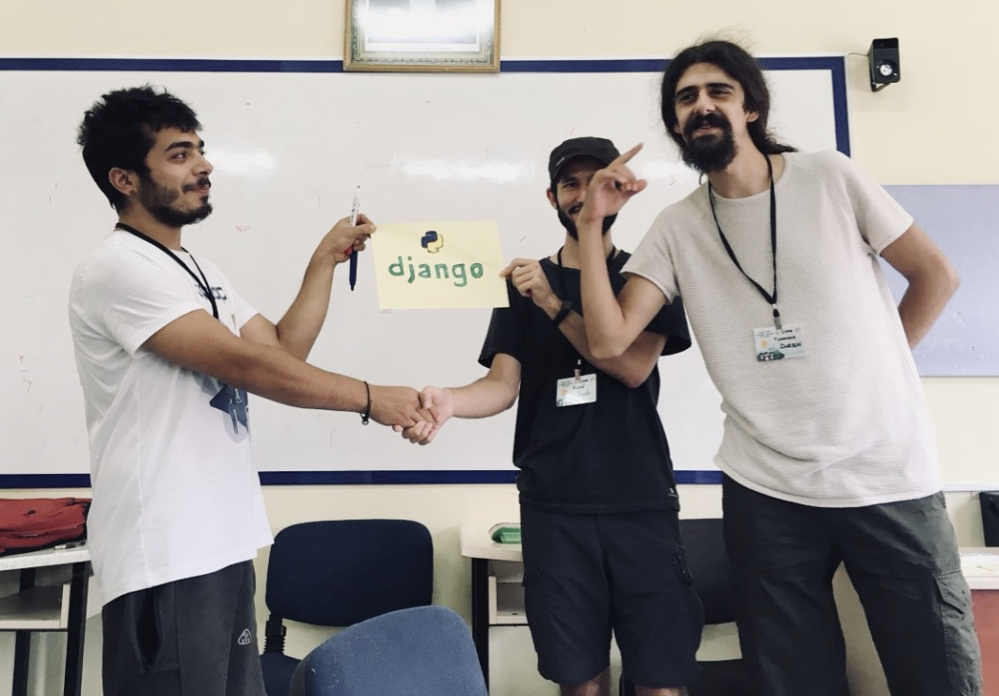
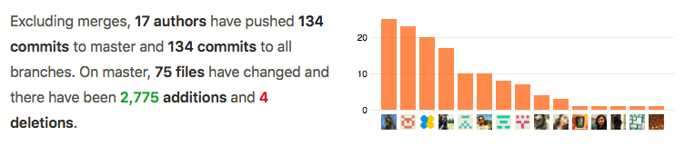
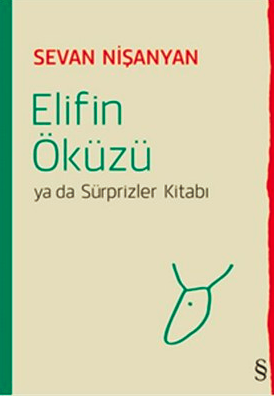
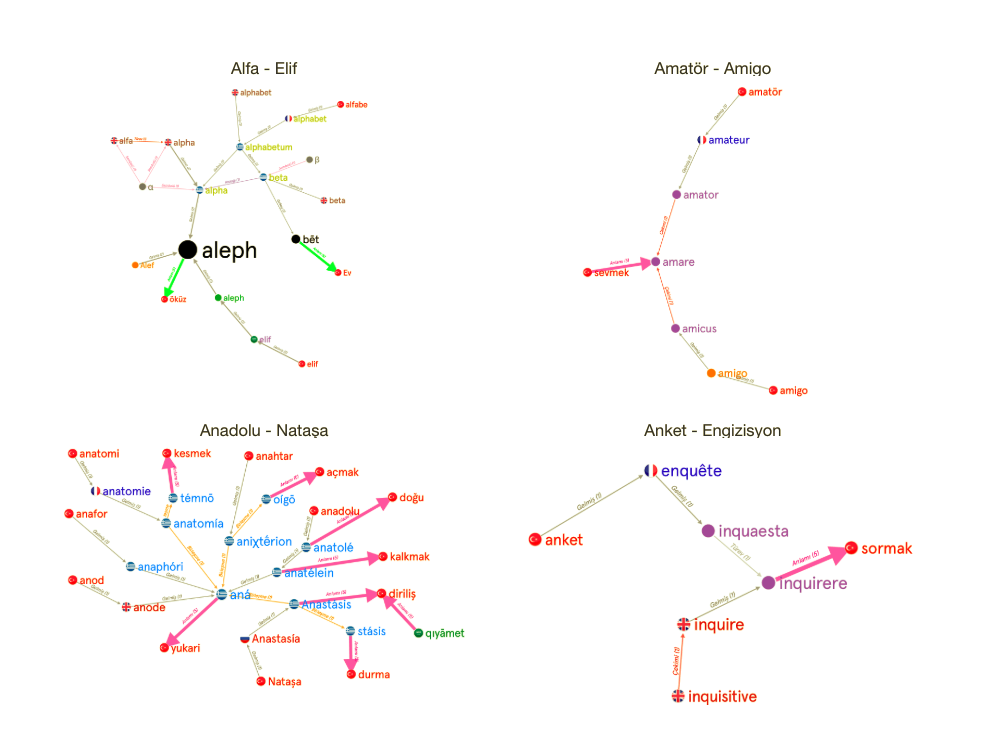
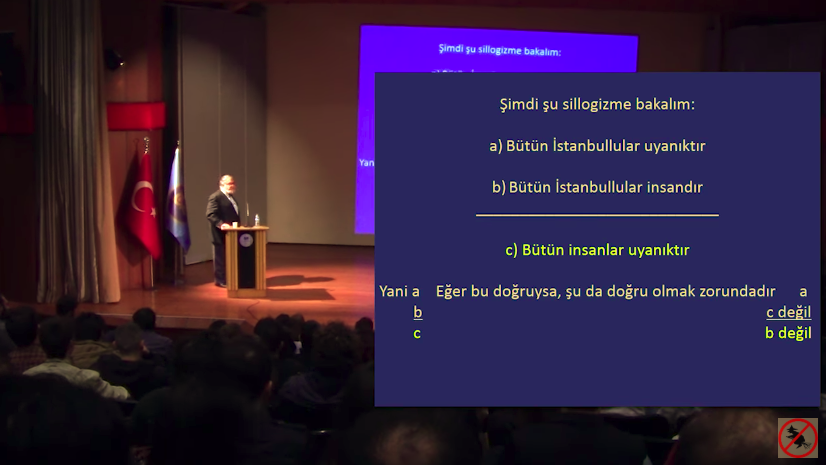
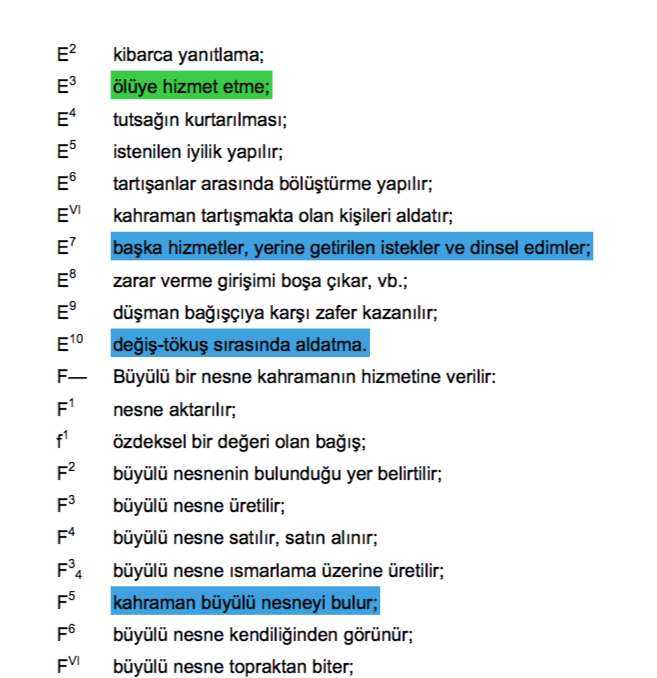
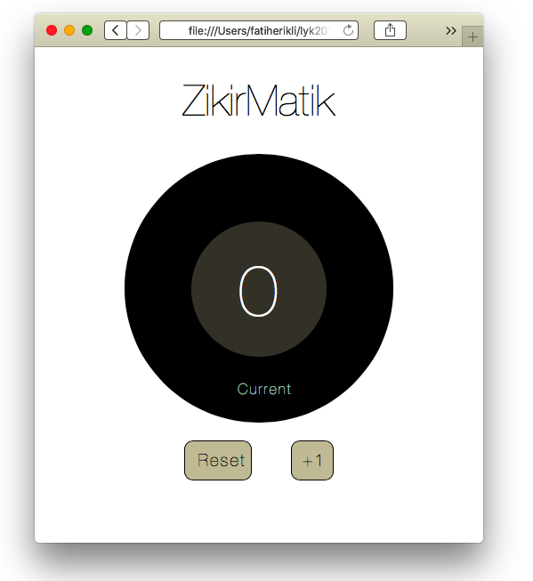
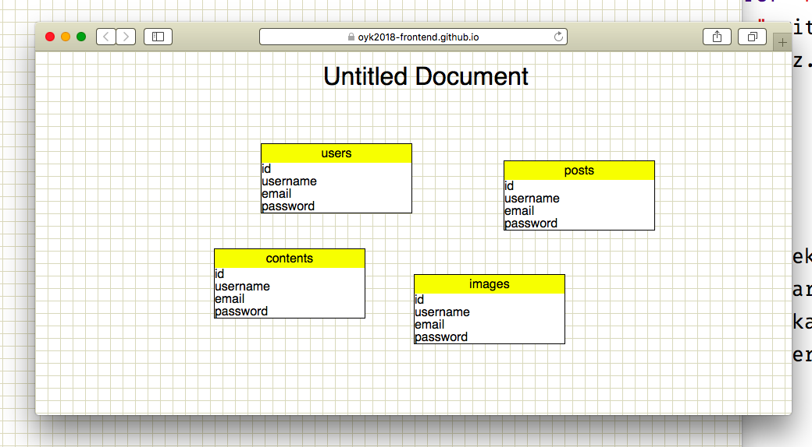

2010 yılından beri Linux Yaz Kampı kampı adı altında ile düzenlenen kamp bu sene biraz daha farklı idi. Geçtigimiz senenin sonunda bu geleneği başlatan Mustafa Akgül hocamızı kaybettik. Hiç bitmeyen bir yaşam enerjisi ile kanlarımıza işlediği özgür yazılım felsefesini yaymak artık bizlere düşüyor.
Mustafa Akgül (10 Mayıs 1948 - 13 Aralık 2017), Türk mühendis, matematikçi. Düzenlediği birçok etkinlik, eğitim, seminer ve konferans veyayımladığı yazılar, e-posta listeleriyle Türkiye'de internet ve teknoloji kültürünün gelişmesi, özgür yazılım felsefesinin yaygınlaşması konularında öncülük etmiştir.
Otonom sınıflar
Ben geçtiğimiz senelerde olduğu gibi bu sene de Django sınıfından sorumluydum. İlk hafta Django sınıfının düzenini kurduktan sonra Arayüz programlama sınıfına desteğe gitme ihtimalim vardı. Bu gidişin sınıftaki düzeni bozmaması için bu sene bir şey denemek istedim ve sınıftaki bir öğrenciyi (katip) ikinci günden sonra eğitmen yaptık. Kamp sonunda söyleyebileceğim şey, iyi ki yapmışız!
Sınıfta kendi bilgisayarımı bağlayıp Python & Django kurulumu göstermek yerine, sınıftan bir öğrencinin bilgisayarını bağlayıp ona yapması gerekenleri söyledim. Yaptığımız ilk şey bu idi, bir katip bulmak, nitekim kamp boyunca öğrencinin adı da katip olarak kaldı. Seneye Django sınıfında eğitmen olarak devam edeceğinin sözünü de aldık.

ben, kemal hoca, katip. django sınıfını teslim ederken
Sınıfı ikinci hafta Kemal Soylu ve Tunahan Dursun (katip) pek tatlı bir şekilde tamamlayıp öğrencileri mezun ettiler. Ben ise Javascript desteği vermek için Arayüz sınıfındaydım.
Projeler projeler!
Bu sene benim için çok verimli geçti. Tüm öğrenciler git kullanımına bir şekilde aşina olup birlikte proje geliştirdiler. Kolektif bir şey üretebilmenin, sırf javascript ya da python öğrenmekten çok daha değerli olduğunu düşünüyorum. Benim için öncelik bir framework ya da dilden ziyade, bunu öğrencilere aşıyabilmekti.
Yapılan işler hala devam etmekte ve her biri github üzerinde açık bir şekilde geliştirilmektedir. Eğer siz de destek atabilirseniz öğrencilerin çok sevineceğinden eminim.

elifinöküzü projesi 2 hafta içerisinde django sınıfından 17 kişinin aktif katkısını aldı.
İlk proje, Elifin Öküzü

Django sınıfında ısınma ve öğrenme projesi olarak bir etimolojik sözlük geliştirelim dedik. Hem uğraşması eğlenceli, hem de üzerinde django öğrenebileceğimiz bir işti bu.
Projenin adı Sevan Nisanyan'ın Elifin Öküzü ya da Küçük Sürprizler Kitabından gelmektedir. Kitabı mutlaka gözden geçirmenizi tavsiye ederim, bazı kelimeler için çok çok şaşıracaksınız.
Projeyi bir graph veri yapısı modelleyerek tasarladık. Referansımız ise Yiğit Güneli'nin elifinokuzu.com'da oluşturduğu düğümkümelerdi. Proje github üzerinde açık kaynak bir şekilde MIT lisansı ile geliştirilmeye devam etmektedir.

Tümdengelimsel Muhakeme (Deductive Reasoning)
Django sınıfında geliştirilen diğer projelerden birisi ise bir deductive reasoning aracı idi. Daha net bir şekilde anlatmak istersem eğer, bir silogizm (tasım) oluşturarak bir ispat sunmaya sağlayan araç tasarlamaya çalıştık.
Silogizmler üçer terimlerden oluşan (major, minor, sonuç) ispatlardır. İspatın sonucu ilk iki terimlerde verilen önermeye göre çıkarılmaktadır.
All man are mortal. Socrates is a man. Therefore,
Socrates is a mortal. —Antik yunanlı birisi
Celal Şengör'ün Birbirini Yalanlayan İnançlarla Bilim Yapılabilir mi isimli konuşmasında bir silogizm örneği verilerek mantıksal ispat yapılmaktadır. İlgili örnek şuraya tıklanılarak izlenilebilir.

Deductive reasoning aracı github üzerinde MIT lisansı ile geliştirilmeye devam etmektedir.
Masalın Biçimbilimi
Django sınıfının diğer projesi ise Vladimir Propp'un Masal Morfolojisi isimli kitabında çıkardığı masal oluşturma çizelgesinden yola çıkarak bir fabl oluşturma yazılımı oluşturmak idi. Bu benim üzerinde düşünürken en çok keyif aldığım proje oldu, çünkü benim için komple kamp bir masal serimi gibi geliyor. Tüm kampı gün gün loglasam ve isimleri hayvan/uzaylı/robot isimleriyle değiştirsem ileride çoçuklarıma (olursa) anlatmalık bir masal olur diye düşünüyorum.
Bu kitabı bana "bununla bir şeyler yapılır" diye hediye eden Bager hocaya selam ediyorum. Okudum ve okuttum! :)

Masal morfolojisi kitabındaki semboller ve anlamları
Proje hala yapım aşamasında, github üzerinden gelişmeleri takip edebilirsiniz.
Arayüz sınıfı projeleri
Kamp boyunca öğrenirken üretelim diyerek yaptığımız başka projeler de var. Bunlar henüz şekillenmedi, ya da bir araç olarak çıkarmaya hazır değiller ama pratik yapmak isteyenler için faydalı olacağını düşünüyorum.
Zikirmatik
En eğlendiklerimden birisi, sınıfta tek-state'li bir makine ne olabilir diye düşünürken zikirmatik deyiverdik :) Hazal'ınki, Ayten'inki ve Ömer'inkini örnek olarak buraya bırakayım.

Ömer'in flat design zikirmatiki.
Database Designer
Arayüz sınıfında yapmaya karar verdiğimiz bir diğer araç ise bir veritabanı tasarımı uygulaması. Hedefimiz dbpatterns.com'un LocalStorage üzerinde çalışabilenini yapmaktı. Zor taraflarının bittiğini düşünüyorum, sınıfın yakın zamanda arayüzü de toparlayarak kullanıma hazır bir araç getirmesini dört gözle bekliyorum. İlk kullananlarından olacağım :)

Veritabanı tasarım aracının görüntüsü
İlgilenenleri buraya alalım, pull-request'leri bekliyoruz!
Veri Görselleştirmeleri
Bu sene Django ile birlikte toplam dört Python sınıfı vardı. İkinci düzey Python sınıfı matplotlib'e girerek derledikleri veriler ile görselleştirmeler yaptılar.